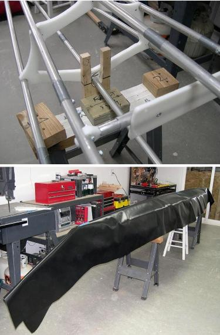

| Covering The Hull (1 of 6) | Menu Previous Page Next Page |
|  |
One-Piece Hull
1. The frame is mounted hull side up on sawhorses using two small stations. In order to maintain the designed amount of rocker, the stations are screwed to cross sections 3 and 6 after leveling up the frame.
The stations are the same ones used in constructing the frame, deck side up, at cross sections 1 and 8. The stations can be either HDPE or wood.
2. PVC is draped over the hull. Masking tape is placed on the keel near the bow, center, and stern to check for movement during cutting and lacing. Trim the PVC to within 3 inches of the gunwales on either side until you get near the ends. When skinning the ends, the PVC will be pulled up and over the stems requiring several additional inches of material below the gunwales at the bow and stern. Let several inches of PVC extend past ends of the frame. It's always better to have too much rather than too little. In cool weather, place heaters under the hull to make the skin more pliable. Electric, oil filled radiators do a good job. Allow the room to heat up for an hour or so. With the aid of an assistant, stretch the skin lengthwise to reduce it's tendency to wrinkle around the gunwales. Note: All PVC cutting and trimming is done with a heavy duty pair of scissors. PVC does not fray, so there is no need to cut and sear with a hot-knife. |